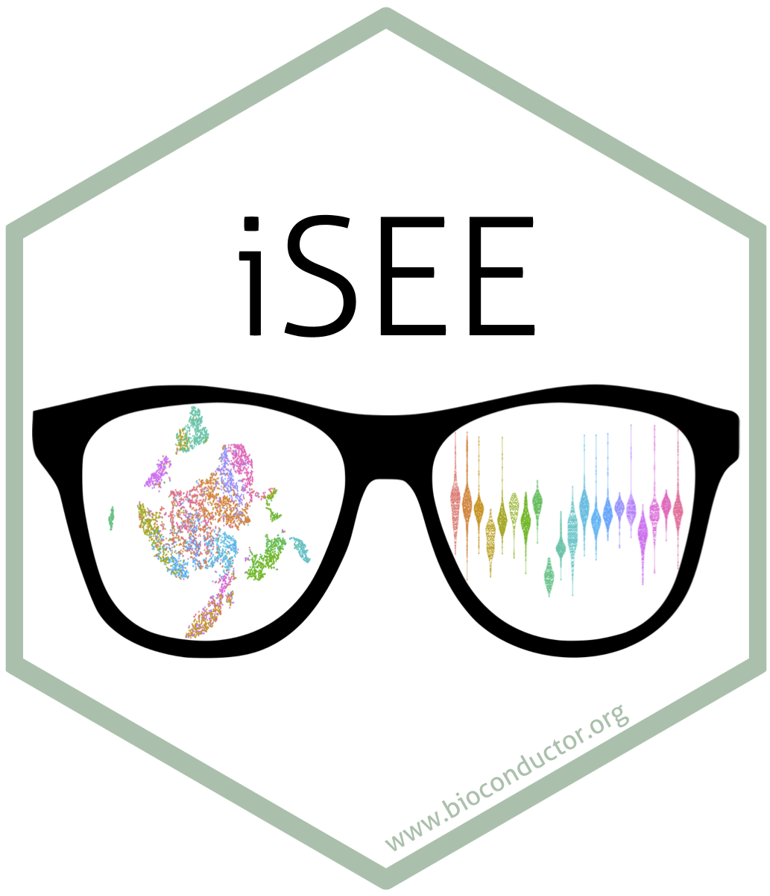

Deploying iSEE
Federico Marini1, Kevin Rue-Albrecht2, Charlotte Soneson3, Aaron Lun4, Najla Abassi5
Source:vignettes/d06_deploying_iSEE.Rmd
d06_deploying_iSEE.Rmd
Introduction
In this vignette, we illustrate how to deploy an instance of iSEE,
dedicated to a dataset you want to display and explore with it.
This will assume you have some familiarity with
- the dataset you want to display with iSEE
- the iSEE app, itself
- the deployment of Shiny apps, either on a Shiny Server/Posit Connect instance, or on https://www.shinyapps.io/
Additional requirements
On top of your dataset, you will need one of the following platforms for deploying your instance into the web: a Shiny Server, Posit Connect, or shinyapps.io
Setting up a Shiny Server
A Shiny Server (https://posit.co/download/shiny-server/) is a free solution to host any of your apps online.
To set up Shiny Server on your premises, you can refer to https://docs.posit.co/shiny-server/. If you are already familiar with it, and have a Shiny Server installed and running, you can consider jumping directly to https://docs.posit.co/shiny-server/#quick-start for a full dive in.
Since this might be an easy and free option, we will cover this in the remainder of this document.
If you have root access to the Shiny Server, it might be quite straightforward to install any required dependencies, be those Unix packages or R/Bioconductor packages. Keep in mind that the Shiny Server has to run on a Linux system, and a common distribution for that would be Ubuntu.
In the simplest case, you can login to your Shiny Server and run the following commands to make sure you are all set.
Within the R console
# install Bioconductor
install.packages("BiocManager")
# install iSEE and its dependencies
BiocManager::install("iSEE")
# install also its suggested packages with...
BiocManager::install("iSEE", dependencies =TRUE)
# load the iSEE package
library("iSEE")
# run the app without any dataset pre-loaded
iSEE()
# keep in mind that the server might be a headless one, so it can be that no app
# is showing up as you commonly expect when you run this locallyUsing Posit Connect
If your group/your institute/your company has access to an instance of Posit Connect, it might be even easier to deploy your applications.
Posit Connect is an enterprise-level product, available at https://posit.co/products/enterprise/connect/. A very comprehensive user guide is available at https://docs.posit.co/connect/user/.
If you use Posit Connect, you can still re-apply some of the content explained below for the deployment of your data with iSEE.
Using shinyapps.io
Shinyapps.io is another service offered by Posit to share your Shiny applications online. A free tier is available for all, yet this might clash a bit with the specific requirements that serving a complex, fairly large dataset within iSEE entails - not because of iSEE, but rather for the fact that the dataset itself can be large/require more memory than what the free tier might offer.
Similarly to Posit Connect, some concepts of the deployment are in common, and you might learn the essential ones to deploy your data within shinyapps.io.
Deploying an exemplary instance of iSEE on any dataset
In this section, you will learn the necessary steps to get your data onto the server and deploy an app that explores it.
Some preliminary operations we will need to do include:
- creating the folder and the app script to run your iSEE instance
- setting up the Shiny Server to know that a new app is ready to be displayed
- checking the logs to monitor the app behavior
Assuming you are already logged in into the Shiny Server, we will try
to deploy a my_iSEE app by typing while in the root
folder:
# navigate to...
cd /srv/shiny-server
# create a new folder named my_iSEE
mkdir my_iSEE
# this will be the folder where to put the app.R file, which you can create with any editor
touch my_iSEE/app.RWe will fill in the content of the app.R file as we
go.
Got data?
First things first - you’ll need some data. iSEE will simply require any SummarizedExperiment or SingleCellExperiment (or any of its derivate classes).
You will need essentially any command that gives you the
my_sce object that you will need.
library("SummarizedExperiment")
library("SingleCellExperiment")
library("iSEE")
# if using an RDS file
my_sce <- readRDS("path/to/that/sce.RDS")
# if using an h5ad file
my_sce <- zellkonverter::readH5AD("path/to/data.h5ad")
# if serving an example dataset, this can also come from a function call, e.g.
my_sce <- scRNAseq::ReprocessedAllenData()Keep in mind that the lines to load the data will become an essential
part of the app.R file. We will copy its content into it,
once we assemble the final version of the file on the Shiny Server.
Setting up iSEE for that dataset
This is the part that you can take care of on any machine, and possibly your laptop is the best setting to launch iSEE and configure it as you wish, with the panels you desire, with the preset values for any of the Data/Visual/Selection parameters.
This can boil down to…
# as a starter...
iSEE(my_sce) After navigating and changing configurations, do store the code to
create the initial list-like object to start iSEE just the
way you want it to look like. This can be done as described in the
dedicated section of the overview
vignette by clicking on the Export -> Display panel settings
button.
Once you have the code to create that initial
configuration, you can test it by running
iSEE(my_sce, initial = initial)This should give you the app in the exact status you wanted to start from.
Do not forget to store the code to create exactly that
initial object, and put that into the app.R
file we are assembling.
Enhancing the experience of users with a tour
An excellent way to guide viewers and users of the app is via a tour. See more in the dedicated section of the overview vignette.
Typically, a tour can be saved as a data.frame object,
that is created via a simple tabular text file, which contains at least
two columns - element and intro, as expected
by the rintrojs package. See more about this by checking
the main help topic of the iSEE function, via ?iSEE.
Once the tour is prepared, you can read it in and run the app with this command:
my_tour <- read.delim("path/to/tsvfile.txt")
iSEE(my_sce, initial = initial, tour = my_tour)We are all set! The next step will bring all these ingredients onto the Shiny Server.
Transferring data and code to run the iSEE instance
This step normally can be executed using the scp
command.
We will copy, one after the other, the dataset object, the
app.R, and optionally the tsvfile.txt for the
tour.
# from your laptop, where all these files are
scp sce.RDS app.R tsvfile.txt username@server:/srv/shiny-server/my_iSEEAs of now, this is more or less how your app.R could
look like, in a very simplified form:
library("iSEE")
my_sce <- readRDS("path/to/that/sce.RDS")
initial <- list(
ReducedDimensionPlot(),
FeatureAssayPlot(),
RowDataTable()
)
my_tour <- read.delim("path/to/tsvfile.txt")
iSEE(my_sce, initial = initial, tour = my_tour)Keep in mind you can still refine and edit this file once it is on the Shiny Server, by simply using any text editor (vi, emacs, gedit, …).
Your directory structure should look like this:
root@shiny:/srv/shiny-server# tree my_iSEE/
my_iSEE/
└── app.R
└── sce.RDS
└── tsvfile.txtTime to tell now the Shiny Server that a new app is ready to be
served! You will need to edit the
/etc/shiny-server/shiny-server.conf file and add these
lines within the server {} settings:
server{
# ...
# whatever other content you had in this file
# ...
location /my_iSEE {
app_dir /srv/shiny-server/my_iSEE;
log_dir /var/log/shiny-server/my_iSEE;
directory_index off;
app_init_timeout 250;
}
# ...
}Specifically, this will also tell us where the log files will be
stored. They can be easily inspected as the app is running by using the
tail command.
Once you are done with this, you can restart the Shiny Server (not strictly necessary, but suggested to make sure all apps are ready to be served) with this command
Start spreading the news
If all went fine, you will be able to see your app served onto your
Shiny Server at the address
[your server address]/my_iSEE.
Congratulations! Time to proudly spread the news about that precious
URL.
Or well, if you have some further ideas on how the deployed app should
look like, just play around with it, store the code to obtain the
updated initial configuration, edit the content of the
tour, or a mix of these things.
Providing information in your manuscript
If you wanted to make your dataset available not just on the classical repositories such as GEO, but rather really ready-to-explore for the readers of your manuscript, well done thought!
You can consider adding/updating the “Data Availability” section of your manuscript by putting a sentence on the line of
We provide the annotated single-cell RNA-seq datasets via an interactive application, built with the iSEE package and available at http://shiny.imbei.uni-mainz.de:3838/iSEE_KDM6B_inhibition.
This example is taken by a recent preprint where the authors have provided their datasets exactly in this manner. You can also consider citing iSEE in the main text - the info you will need is easy to be found.
citation("iSEE")
#> To cite package 'iSEE' in publications use:
#>
#> Rue-Albrecht K, Marini F, Soneson C, Lun ATL (2018). "iSEE:
#> Interactive SummarizedExperiment Explorer." _F1000Research_, *7*,
#> 741. doi:10.12688/f1000research.14966.1
#> <https://doi.org/10.12688/f1000research.14966.1>.
#>
#> A BibTeX entry for LaTeX users is
#>
#> @Article{,
#> title = {iSEE: Interactive SummarizedExperiment Explorer},
#> author = {Kevin Rue-Albrecht and Federico Marini and Charlotte Soneson and Aaron T. L. Lun},
#> publisher = {F1000 Research, Ltd.},
#> journal = {F1000Research},
#> year = {2018},
#> month = {Jun},
#> volume = {7},
#> pages = {741},
#> doi = {10.12688/f1000research.14966.1},
#> }Deploying a collection of datasets via iSEEindex
The concept of serving one dataset is at the core of the iSEE application.
In some recent developments, we have created the
iSEEindex package, that extends this idea to an entire
collection of datasets. This leverages the possibility,
within iSEE, to have a custom “landing page” - iSEEindex takes this to
the next level, without too much additional overhead.
To get familiar with how ìSEEindex works, we refer you
to the documentation and vignettes of the package itself, accessible at
https://bioconductor.org/packages/iSEEindex/.
Adding up the concepts we have learned in this vignette to the info on how iSEEindex works, this can be translated into a couple of simple operations:
Data: You will need to transfer not just one file but all the files, possibly one for each dataset you want to serve
initialconfigurations: Again, ideally one per dataset. You might need a small script that specifically creates that objectTour: Again, one tour per dataset. Ideal to guide readers through the many facets of a dataset - consider that your live, breathing version of the figure legend!
A very good example of how to set up all this into one well-crafted file is the yaml example provided within the iSEEindex package, available at https://github.com/iSEE/iSEEindex/blob/devel/inst/example.yaml.
If you would like to see how one such instance can look like, you can see the IFNresource in action at https://rehwinkellab.shinyapps.io/ifnresource/ (Rigby et al. 2023).
Looking for some inspiration?
The apps gallery on the iSEE website (https://isee.github.io/apps.html) is the place to watch for seeing some apps deployed in the wild.
If you want to see the code underlying some of such instances - and more - you can check out the https://github.com/iSEE/iSEE_instances/ Github repository.
Feel free to reach out (e.g. via email at marinif@uni-mainz.de) if you need some assistance in this process, or would like your data to be hosted upon our premises at the IMBEI.
Session info
Session info
sessionInfo()
#> R version 4.5.1 (2025-06-13)
#> Platform: x86_64-pc-linux-gnu
#> Running under: Ubuntu 24.04.3 LTS
#>
#> Matrix products: default
#> BLAS: /usr/lib/x86_64-linux-gnu/openblas-pthread/libblas.so.3
#> LAPACK: /usr/lib/x86_64-linux-gnu/openblas-pthread/libopenblasp-r0.3.26.so; LAPACK version 3.12.0
#>
#> locale:
#> [1] LC_CTYPE=en_US.UTF-8 LC_NUMERIC=C
#> [3] LC_TIME=en_US.UTF-8 LC_COLLATE=en_US.UTF-8
#> [5] LC_MONETARY=en_US.UTF-8 LC_MESSAGES=en_US.UTF-8
#> [7] LC_PAPER=en_US.UTF-8 LC_NAME=C
#> [9] LC_ADDRESS=C LC_TELEPHONE=C
#> [11] LC_MEASUREMENT=en_US.UTF-8 LC_IDENTIFICATION=C
#>
#> time zone: Etc/UTC
#> tzcode source: system (glibc)
#>
#> attached base packages:
#> [1] stats4 stats graphics grDevices utils datasets methods
#> [8] base
#>
#> other attached packages:
#> [1] iSEE_2.20.0 SingleCellExperiment_1.30.1
#> [3] SummarizedExperiment_1.38.1 Biobase_2.68.0
#> [5] GenomicRanges_1.60.0 GenomeInfoDb_1.44.3
#> [7] IRanges_2.42.0 S4Vectors_0.46.0
#> [9] BiocGenerics_0.54.0 generics_0.1.4
#> [11] MatrixGenerics_1.20.0 matrixStats_1.5.0
#> [13] BiocStyle_2.36.0
#>
#> loaded via a namespace (and not attached):
#> [1] rlang_1.1.6 magrittr_2.0.4 shinydashboard_0.7.3
#> [4] clue_0.3-66 GetoptLong_1.0.5 compiler_4.5.1
#> [7] mgcv_1.9-3 png_0.1-8 systemfonts_1.3.0
#> [10] vctrs_0.6.5 pkgconfig_2.0.3 shape_1.4.6.1
#> [13] crayon_1.5.3 fastmap_1.2.0 XVector_0.48.0
#> [16] fontawesome_0.5.3 promises_1.3.3 rmarkdown_2.30
#> [19] UCSC.utils_1.4.0 shinyAce_0.4.4 ragg_1.5.0
#> [22] xfun_0.53 cachem_1.1.0 jsonlite_2.0.0
#> [25] listviewer_4.0.0 later_1.4.4 DelayedArray_0.34.1
#> [28] parallel_4.5.1 cluster_2.1.8.1 R6_2.6.1
#> [31] bslib_0.9.0 RColorBrewer_1.1-3 jquerylib_0.1.4
#> [34] Rcpp_1.1.0 iterators_1.0.14 knitr_1.50
#> [37] httpuv_1.6.16 Matrix_1.7-4 splines_4.5.1
#> [40] igraph_2.1.4 tidyselect_1.2.1 abind_1.4-8
#> [43] yaml_2.3.10 doParallel_1.0.17 codetools_0.2-20
#> [46] miniUI_0.1.2 lattice_0.22-7 tibble_3.3.0
#> [49] shiny_1.11.1 S7_0.2.0 evaluate_1.0.5
#> [52] desc_1.4.3 circlize_0.4.16 pillar_1.11.1
#> [55] BiocManager_1.30.26 DT_0.34.0 foreach_1.5.2
#> [58] shinyjs_2.1.0 ggplot2_4.0.0 scales_1.4.0
#> [61] xtable_1.8-4 glue_1.8.0 tools_4.5.1
#> [64] colourpicker_1.3.0 fs_1.6.6 grid_4.5.1
#> [67] colorspace_2.1-2 nlme_3.1-168 GenomeInfoDbData_1.2.14
#> [70] vipor_0.4.7 cli_3.6.5 textshaping_1.0.3
#> [73] S4Arrays_1.8.1 viridisLite_0.4.2 ComplexHeatmap_2.24.1
#> [76] dplyr_1.1.4 gtable_0.3.6 rintrojs_0.3.4
#> [79] sass_0.4.10 digest_0.6.37 SparseArray_1.8.1
#> [82] ggrepel_0.9.6 rjson_0.2.23 htmlwidgets_1.6.4
#> [85] farver_2.1.2 htmltools_0.5.8.1 pkgdown_2.1.3
#> [88] lifecycle_1.0.4 httr_1.4.7 shinyWidgets_0.9.0
#> [91] GlobalOptions_0.1.2 mime_0.13